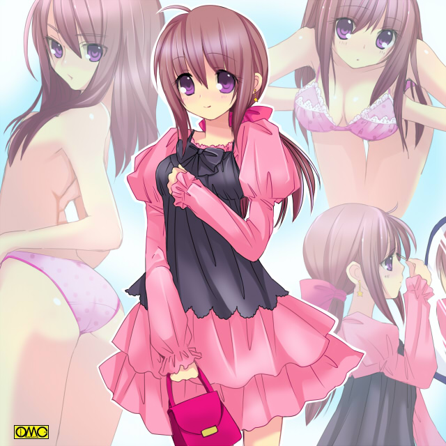

着せ替え少年
服に着られてしまう上に性転換してしまう超特異体質の少年つかさくんの受難の日々。

このイラストはＯＭＣによって作成されました
クリエイターのさいばしさんに感謝！
『着せ替え少年〜Ｄｒｅｓｓ ｕｐ Ｂｏｙ』（画・ＭＯＮＤＯさん）
『着せ替え少年〜Ｄｒｅｓｓ ｕｐ Ｂｏｙ２〜Ｔｒｕｅ Ｌｏｖｅ Ｓｔｏｒｙ』
『着せ替え少年〜Ｄｒｅｓｓ ｕｐ Ｂｏｙ３〜ファーストＫｉｓｓ物語』（画・ＭＯＮＤＯさん）
『着せ替え少年〜Ｄｒｅｓｓ ｕｐ Ｂｏｙ４〜ときめきメモリアル〜』（画・ＭＯＮＤＯさん）
〜番外エンディング〜（画・ＭＯＮＤＯさん）
「着せ替え少年〜Ｄｒｅｓｓ ｕｐ Ｂｏｙ５〜プリンセスクエスト〜」（画・ＭＯＮＤＯさん）
「着せ替え少年〜Ｄｒｅｓｓ ｕｐ Ｂｏｙ６〜北へ〜」
「着せ替え少年 お年賀スペシャル」（個人的に年賀状に添付したもの）
「着せ替え少年〜Ｄｒｅｓｓ ｕｐ ｂｏｙ６．５〜こみっくパーティー〜」
「着せ替え少年〜Ｄｒｅｓｓ ｕｐ ｂｏｙ６．５〜こみっくぱーてぃー〜」（文庫さん掲載バージョン）（イラスト・ＭＯＮＤＯさん）
「着せ替え少年〜Ｄｒｅｓｓ ｕｐ Ｂｏｙ７〜剣術小町〜」（イラスト・ＭＯＮＤＯさん）
「着せ替え少年番外編〜ＳｕｍｍｅｒＤａｙ’ｓ ａｎｄ ｙｅｔ」（イラスト・ＭＯＮＤＯさん）
｢着せ替え少年〜Ｄｒｅｓｓ Ｕｐ Ｂｏｙ〜初恋バレンタイン｣
「着せ替え少年〜Ｄｒｅｓｓ Ｕｐ Ｂｏｙ８〜初恋バレンタイン」掲載バージョン（イラスト・ＭＯＮＤＯさん）
「着せ替え少年〜Ｄｒｅｓｓ Ｕｐ Ｂｏｙ９〜プリンセスナイン」
「着せ替え少年〜Ｄｒｅｓｓ Ｕｐ Ｂｏｙ９〜プリンセスナイン」文庫さん掲載バージョン（イラスト･ＭＯＮＤＯさん）
「着せ替え少年〜Ｄｒｅｓｓ Ｕｐ Ｂｏｙ１０〜シスタープリンセス」
「着せ替え少年〜Ｄｒｅｓｓ Ｕｐ Ｂｏｙ１０〜シスタープリンセス」文庫さん掲載バージョン（イラスト・ＭＯＮＤＯさん）
「着せ替え少年〜Ｄｒｅｓｓ Ｕｐ Ｂｏｙ〜Ｘ Ｃｈａｎｇｅ」
着せ替え少年〜Ｄｒｅｓｓ Ｕｐ Ｂｏｙ１１〜Ｘ Ｃｈａｎｇｅ 文庫さん掲載バージョン・（イラストＭＯＮＤＯさん）
着せ替え少年〜Ｄｒｅｓｓ Ｕｐ Ｂｏｙ１２〜Ｓｈｉｆｔ（城弾シアターバージョン）
着せ替え少年〜ＥＰＩＳＯＤＥ ＦＩＮＡＬ〜卒業（城弾シアターバージョン）
２０１３年コミックマーケット８５キャンペーン作品 「着せ替え少年 特別編 君帰す」